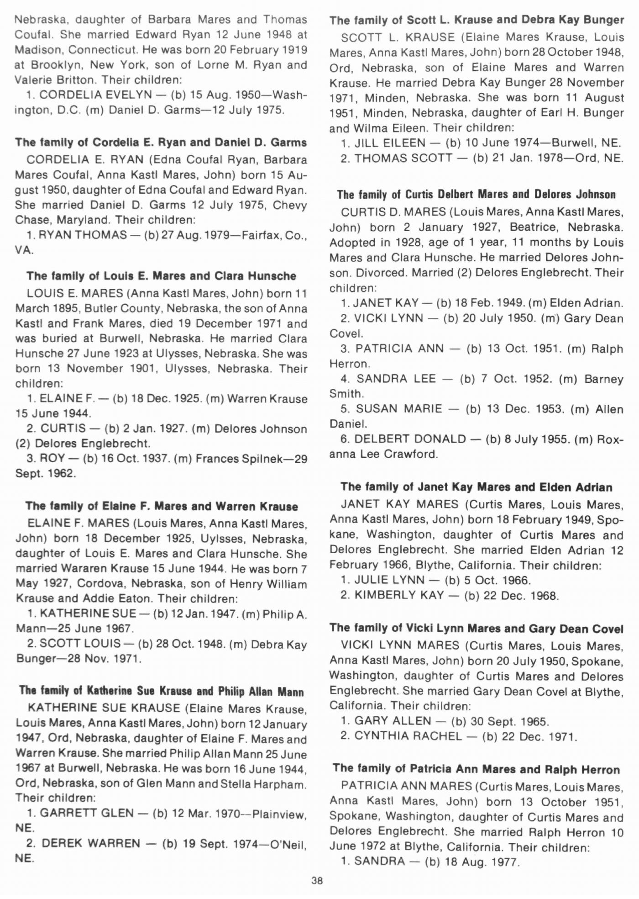

The book · The Family of John Kastl
Page 38 The family of Cordelia E. Ryan and Daniel D. Garms


Transcription
Nebraska, daughter of Barbara Mares and Thomas Coufal. She married Edward Ryan 12 June 1948 at Madison, Connecticut. He was born 20 February 1919 at Brooklyn, New York, son of Lorne M. Ryan and Valerie Britton. Their children:
- CORDELIA EVELYN — (b) 15 Aug. 1950—Washington, D.C. (m) Daniel D. Garms—12 July 1975.
The family of Cordelia E. Ryan and Daniel D. Garms
CORDELIA E. RYAN (Edna Coufal Ryan, Barbara Mares Coufal, Anna Kastl Mares, John) born 15 August 1950, daughter of Edna Coufal and Edward Ryan. She married Daniel D. Garms 12 July 1975, Chevy Chase, Maryland. Their children:
- RYAN THOMAS — (b) 27 Aug. 1979—Fairfax, Co., VA.
The family of Louis E. Mares and Clara Hunsche
LOUIS E. MARES (Anna Kastl Mares, John) born 11 March 1895, Butler County, Nebraska, the son of Anna Kastl and Frank Mares, died 19 December 1971 and was buried at Burwell, Nebraska. He married Clara Hunsche 27 June 1923 at Ulysses, Nebraska. She was born 13 November 1901, Ulysses, Nebraska. Their children:
- ELAINE F. — (b) 18 Dec. 1925. (m) Warren Krause 15 June 1944.
- CURTIS — (b) 2 Jan. 1927. (m) Delores Johnson (2) Delores Englebrecht.
- ROY — (b) 16 Oct. 1937. (m) Frances Spilnek—29 Sept. 1962.
The family of Elaine F. Mares and Warren Krause
ELAINE F. MARES (Louis Mares, Anna Kastl Mares, John) born 18 December 1925, Uylsses, Nebraska, daughter of Louis E. Mares and Clara Hunsche. She married Wararen Krause 15 June 1944. He was born 7 May 1927, Cordova, Nebraska, son of Henry William Krause and Addie Eaton. Their children:
- KATHERINE SUE — (b) 12 Jan. 1947. (m) Philip A. Mann—25 June 1967.
- SCOTT LOUIS — (b) 28 Oct. 1948. (m) Debra Kay Bunger—28 Nov. 1971.
The family of Katherine Sue Krause and Philip Allan Mann
KATHERINE SUE KRAUSE (Elaine Mares Krause, Louis Mares, Anna Kastl Mares, John) born 12 January 1947, Ord, Nebraska, daughter of Elaine F. Mares and Warren Krause. She married Philip Allan Mann 25 June 1967 at Burwell, Nebraska. He was born 16 June 1944, Ord, Nebraska, son of Glen Mann and Stella Harpham. Their children:
- GARRETT GLEN — (b) 12 Mar. 1970—Plainview, NE.
- DEREK WARREN — (b) 19 Sept. 1974—O'Neil, NE.
The family of Scott L. Krause and Debra Kay Bunger
SCOTT L. KRAUSE (Elaine Mares Krause, Louis Mares, Anna Kastl Mares, John) born 28 October 1948, Ord, Nebraska, son of Elaine Mares and Warren Krause. He married Debra Kay Bunger 28 November 1971, Minden, Nebraska. She was born 11 August 1951, Minden, Nebraska, daughter of Earl H. Bunger and Wilma Eileen. Their children:
- JILL EILEEN — (b) 10 June 1974—Burwell, NE.
- THOMAS SCOTT — (b) 21 Jan. 1978—Ord, NE.
The family of Curtis Delbert Mares and Delores Johnson
CURTIS D. MARES (Louis Mares, Anna Kastl Mares, John) born 2 January 1927, Beatrice, Nebraska. Adopted in 1928, age of 1 year, 11 months by Louis Mares and Clara Hunsche. He married Delores Johnson. Divorced. Married (2) Delores Englebrecht. Their children:
- JANET KAY — (b) 18 Feb. 1949. (m) Elden Adrian.
- VICKI LYNN — (b) 20 July 1950. (m) Gary Dean Covel.
- PATRICIA ANN — (b) 13 Oct. 1951. (m) Ralph Herron.
- SANDRA LEE — (b) 7 Oct. 1952. (m) Barney Smith.
- SUSAN MARIE — (b) 13 Dec. 1953. (m) Allen Daniel.
- DELBERT DONALD — (b) 8 July 1955. (m) Roxanna Lee Crawford.
The family of Janet Kay Mares and Elden Adrian
JANET KAY MARES (Curtis Mares, Louis Mares, Anna Kastl Mares, John) born 18 February 1949, Spokane, Washington, daughter of Curtis Mares and Delores Englebrecht. She married Elden Adrian 12 February 1966, Blythe, California. Their children:
- JULIE LYNN — (b) 5 Oct. 1966.
- KIMBERLY KAY — (b) 22 Dec. 1968.
The family of Vicki Lynn Mares and Gary Dean Covel
VICKI LYNN MARES (Curtis Mares, Louis Mares, Anna Kastl Mares, John) born 20 July 1950, Spokane, Washington, daughter of Curtis Mares and Delores Englebrecht. She married Gary Dean Covel at Blythe, California. Their children:
- GARY ALLEN — (b) 30 Sept. 1965.
- CYNTHIA RACHEL — (b) 22 Dec. 1971.
The family of Patricia Ann Mares and Ralph Herron
PATRICIA ANN MARES (Curtis Mares, Louis Mares, Anna Kastl Mares, John) born 13 October 1951, Spokane, Washington, daughter of Curtis Mares and Delores Englebrecht. She married Ralph Herron 10 June 1972 at Blythe, California. Their children:
- SANDRA — (b) 18 Aug. 1977.
People from the line of descent on this page
- Barbara Frances Mares b. 1891
- Louis Emanuel Mares 1895–1971
- Thomas W. Coufal 1887–1971
- Edna Coufal b. 1916
- Edward Ryan b. 1919
- Cordelia Evelyn Ryan b. 1950
- Ryan Thomas Garms b. 1979
- Clara Hunsche b. 1901
- Elaine F. Mares b. 1925
- Curtis Delbert Mares b. 1927
- Roy Mares b. 1937
- Warren Krause b. 1927
- Katherine Sue Krause b. 1947
- Scott Louis Krause b. 1948
- Philip Allan Mann b. 1944
- Garrett Glen Mann b. 1970
- Derek Warren Mann b. 1974
- Debra Kay Bunger b. 1951
- Jill Eileen Krause b. 1974
- Thomas Scott Krause b. 1978
- Janet Kay Mares b. 1949
- Vicki Lynn Mares b. 1950
- Patricia Ann Mares b. 1951
- Sandra Lee Mares b. 1952
- Susan Marie Mares b. 1953
- Delbert Donald Mares b. 1955
- Julie Lynn Adrian b. 1966
- Kimberly Kay Adrian b. 1968
- Gary Allen Covel b. 1965
- Cynthia Rachel Covel b. 1971
- Sandra Herron b. 1977
Transcriber’s notes
Two columns. Opens mid-sentence continuing Edna Coufal's paragraph from p. 37 ('born 5 March 1916, Dwight,' / 'Nebraska, ...'). Printed oddities kept: 'Uylsses' (vs Ulysses elsewhere), 'Wararen Krause', 'Fairfax, Co., VA.', 'O'Neil', 'age of 1 year, 11 months'. The dash after '1970' in GARRETT GLEN's entry prints as a doubled hyphen; rendered as an em-dash. Heading 'Curtis Delbert Mares' vs 'CURTIS D. MARES' in paragraph, as printed. Gary Allen Covel's birth year 1965 is as printed.